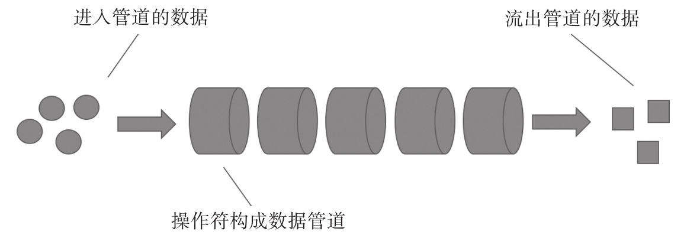
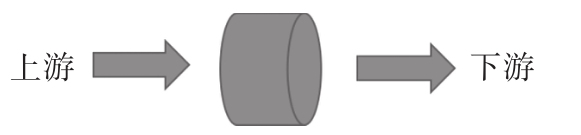

一个Observable对象代表的是一个数据流，实际场景中，产生Observable对象并不是每次都通过直接调用Observable构造函数来创造数据流对象。本章前面的代码示例只是展示Observable的工作原理，如果每个Observable对象都要那样通过new Observable来创建，那就太麻烦而且不实用，RxJS也不可能获得广泛的欢迎。
对于现实中复杂的问题，并不会创造一个数据流之后就直接通过subscribe接上一个Observer，往往需要对这个数据流做一系列处理，然后才交给Observer。就像一个管道，数据从管道的一段流入，途径管道各个环节，当数据到达Observer的时候，已经被管道操作过，有的数据已经被中途过滤抛弃掉了，有的数据已经被改变了原来的形态，而且最后的数据可能来自多个数据源，最后Observer只需要处理能够走到终点的数据。
在RxJS中，组成数据管道的元素就是操作符。
在图2-3中，每一个圆柱体代表一个操作符，多个操作符组成了RxJS中的数据管道。

图2-3 数据管道示意图
对于每一个操作符，链接的就是上游（upstream）和下游（downstream），如图2-4所示。

图2-4 operator的上下游示意图
在数据管道里流淌的数据就像是水，从上游流向下游。对一个操作符来说，上游可能是一个数据源，也可能是其他操作符，下游可能是最终的观察者，也可能是另一个操作符，每一个操作符之间都是独立的，正因为如此，所以可以对操作符进行任意组合，从而产生各种功能的数据管道。
在RxJS中，有一系列用于产生Observable函数，这些函数有的凭空创造Observable对象，有的根据外部数据源产生Observable对象，更多的是根据其他的Observable中的数据来产生新的Observable对象，也就是把上游数据转化为下游数据，所有这些函数统称为操作符。
来看一个使用操作符的例子，代码如下：
import {Observable} from 'rxjs/Observable';
import 'rxjs/add/operator/map';
const onSubscribe = observer => {
observer.next(1);
observer.next(2);
observer.next(3);
};
const source$ = Observable.create(onSubscribe);
source$.map(x => x*x).subscribe(console.log);
上面的代码运行结果如下：
1 4 9
其实就是输出前三个正整数的平方，这个例子很简单。使用了两个操作符，而这两个操作符属于两个不同种类。
第一个操作符是Observable自带的create，它做的事情其实就是创造一个新的Observable对象，所以，我们可以不直接使用new关键字，而使用create来创造Observable对象，create的实现代码十分简单，就是下面这样。
Observable.create = function(subscribe) {
return new Observable(subscribe);
}
因为create是Observable的类函数，所以使用的时候无需Observable对象实例，这是静态类型操作符的特点。
第二个使用的操作符是map，这种操作符要求存在上游Observable，而且以Observable类的实例函数存在。
对JavaScript有了解的读者朋友肯定不会对map陌生，JavaScript的数组对象就支持map函数，数组的map函数接受一个函数作为参数，返回一个新的数组，新数组的每个元素都是函数参数的运算结果。
在RxJS中，和数组的map一样，作为操作符的map也接受一个函数参数，不同之处是，对于数组的map，是把每个数组元素都映射为一个新的值，组合成一个新的数组；然而，对于Observable的map，是对其中每一个数据映射为一个新的值，产生一个新的Observable对象。
通过代码可以看得更清楚一些，如下所示：
const source$ = Observable.create(onSubscribe); const mapped$ = source$.map(x => x*x); mapped$ subscribe(console.log);
其中，调用map的结果赋值为mapped$，这个mapped$是一个全新的Observable对象，每一个操作符都是创造一个新的Observable对象，不会对上游的Observable对象做任何修改，这完全符合我们在第1章提到的函数式编程的“数据不可变”要求。
总之，操作符就是用来产生全新Observable对象的函数。关于操作符有非常丰富的内容，可以说使用RxJS玩的就是操作符，本书后续部分将分类逐一详细介绍。